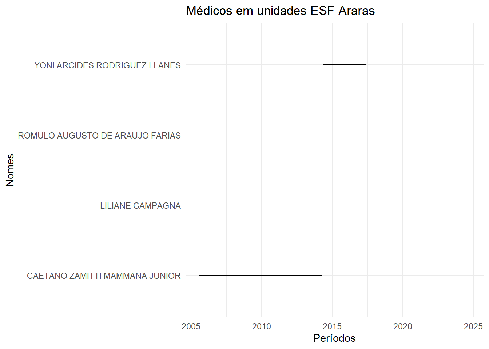
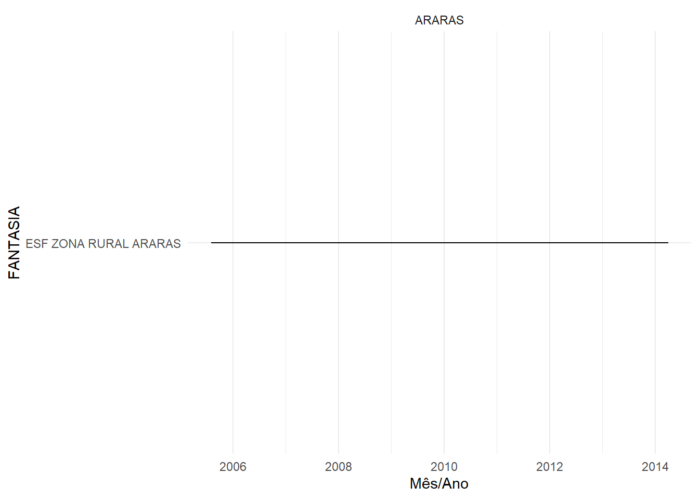
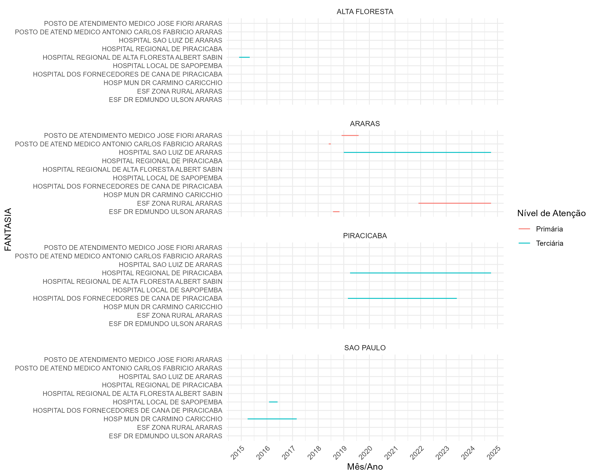

library(RODBC)
library(tidyverse)
library(readxl)ESF - Araras
ESF - Araras
Carregando bibliotecas que serão úteis.
Baixando dados
O script abaixo serve para baixar os dados.
dremio_host <- Sys.getenv("endereco")
dremio_port <- Sys.getenv("port")
dremio_uid <- Sys.getenv("uid")
dremio_pwd <- Sys.getenv("datalake")
channel <- odbcDriverConnect(
sprintf("DRIVER=Dremio Connector;
HOST=%s;
PORT=%s;
UID=%s;
PWD=%s;
AUTHENTICATIONTYPE=Basic Authentication;
CONNECTIONTYPE=Direct",
dremio_host,
dremio_port,
dremio_uid,
dremio_pwd))
query <- 'SELECT * FROM "@daniel"."migracoes_norte"."Médicos que atuaram na ESF Rural Araras"'
df <- sqlQuery(channel,
query,
as.is = TRUE)1. Médicos
Primeiro vamos analisar os fluxos dos profissionais enquanto atuaram na ESF Araras.
df$COMPETEN <- as.Date(paste0(df$COMPETEN, "01"),
format = "%Y%m%d")
df_araras <-
df |>
filter(CNES == '2799375')Vamos visualizar agora os médicos que atuaram na unidade.
df_araras |>
ggplot(aes(x = COMPETEN,
y = NOMEPROF)) +
geom_line() + theme_minimal() +
xlab("Períodos") +
ylab("Nomes") +
ggtitle("Médicos em unidades ESF Araras")
Observa-se que apenas um profissional esteve por um longo período. Os demais ficaram períodos próximos a 3 anos.
df_araras |>
group_by(NOMEPROF) |>
count() |>
mutate(anos = n/12)# A tibble: 4 × 3
# Groups: NOMEPROF [4]
NOMEPROF n anos
<chr> <int> <dbl>
1 CAETANO ZAMITTI MAMMANA JUNIOR 105 8.75
2 LILIANE CAMPAGNA 35 2.92
3 ROMULO AUGUSTO DE ARAUJO FARIAS 42 3.5
4 YONI ARCIDES RODRIGUEZ LLANES 38 3.171.1. Caetano Zamitti Mammana Junior
Em sequência, vamos visualizar a trajetória destes profissionais em diferentes localidades. O primeiro possui registro ativo, de acordo com a busca do CFM, em São Paulo.
df |>
filter(NOMEPROF == 'CAETANO ZAMITTI MAMMANA JUNIOR') |>
ggplot(aes(x = COMPETEN, y = FANTASIA)) +
geom_line() + theme_minimal() + xlab("Mês/Ano") +
facet_wrap(~municipio_pad)
1.2. Liliane Campagna
Verificando a trajetória do profissional.
a <- df |>
filter(NOMEPROF == 'LILIANE CAMPAGNA') |>
ggplot(aes(x = COMPETEN,
y = FANTASIA,
col = nivel_atencao)) +
geom_line() +
theme_minimal() +
xlab("Mês/Ano") +
facet_wrap(~municipio_pad,
nrow = 4) +
scale_x_date(date_breaks = "1 year",
date_labels = "%Y") +
labs(color = "Nível de Atenção") +
theme(
axis.text.y = element_text(size = 8),
axis.text.x = element_text(angle = 45,
hjust = 1),
panel.spacing = unit(1, "lines")
)
ggsave(filename = "02_figuras/Liliane_araras.png",
a, dpi = 300, width = 10, height = 8)
A tabela abaixo permite verificar quanto tempo em média o profissional permanece cada localidade.
df |>
group_by(uf_sigla, municipio_pad, FANTASIA) |>
count() |>
mutate(anos = n/12) |>
rename(meses = n) |>
arrange(desc(meses))# A tibble: 29 × 5
# Groups: uf_sigla, municipio_pad, FANTASIA [29]
uf_sigla municipio_pad FANTASIA meses anos
<chr> <chr> <chr> <int> <dbl>
1 SP ARARAS ESF ZONA RURAL ARARAS 220 18.3
2 SP PIRACICABA HOSPITAL DOS FORNECEDORES DE CANA DE PIRA… 104 8.67
3 SP CAMPINAS UNIDADE DE PRONTO ATENDIMENTO ANCHIETA ME… 79 6.58
4 SP ARARAS HOSPITAL SAO LUIZ DE ARARAS 70 5.83
5 SP PIRACICABA HOSPITAL REGIONAL DE PIRACICABA 67 5.58
6 SP RIO CLARO HOSPITAL SANTA FILOMENA DE RIO CLARO 38 3.17
7 SP VALINHOS UNIDADE DE PRONTO ATENDIMENTO UPA 24 HORAS 31 2.58
8 SP SAO PAULO HOSP MUN DR CARMINO CARICCHIO 24 2
9 SP CAMPINAS UNIDADE DE PRONTO ATENDIMENTO SAO JOSE 20 1.67
10 SP CAMPINAS CENTRAL DE REGULACAO MEDICA DE URGENCIAS 18 1.5
# ℹ 19 more rows